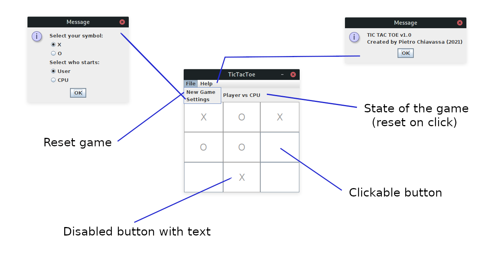

Realizzare un programma grafico che permetta all'utente di giocare una partita a tris (tic-tac-toe) contro un'intelligenza artificiale, simile a quella vista nel film Wargames (1983).
Il codice che implementa il giocatore artificiale (tramite un variante dell'algortimo del MiniMax chiamato NegaMax) e che memorizza lo stato della partita è già fornito nel package joshua. L'obiettivo di questo laboratiorio è pertanto limitato all'implementazione dell'intefaccia grafica del software.
Tutte le classi utili alla creazione dell'interfaccia grafica devono appartenere al package gui. Non ci sono vincoli sul loro nome e sui metodi da esporre.
L'interazione con il codice fornito deve avvenire attraverso la creazione di un oggetto della classe TicTacToe, implementante i metodi dichiarati nell'intefaccia TicTacToeInterface. La classe Move e gli Enum Player e Outcome, specificano gli oggetti attraverso i quali avvengono le interazioni.
La classe Move rappresenta una mossa come una coppia di coordinate che indentificano la posizione nel reticolo del tris (riga e colonna). L'Enum Outcome definisce una serie di costanti rappresentanti i vari esiti di una partita (CPU_WON, USER_WON, DRAW, IN_PROGRESS). L'Enum Player definisce le due tipologie di giocatori (USER e CPU).
Il costuttore della classe TicTacToe richiede come parametro il giocatore che deve effettuare la prima mossa. Lo stesso parametro è richiesto dal metodo newGame() che permette di resettare la partita e far iniziare il giocatore specificato.
E' possibile registrare una mossa dell'utente tramite il metodo userMove() che, fornitie le coordinate nel reticolo, salva la mossa nello stato interno dell'oggetto. Il metodo cpuMove(), invece, analizza lo stato della partita e restituisce la mossa effettuata dal giocatore artificiale. Entrambi i metodi possono lanciare l'eccezione InvalidMoveException nel caso in cui la posizione fornita per la mossa è al di fuori del reticolo, la cella è occupata, la partita è già terminata, oppure non è il turno di quel giocatore. La ragione dell'eccezione è indicata nel suo messaggio.
Lo stato della partita può essere letto tramite il metodo getOutcome(). Il giocatore di turno può essere ottenuto tramite il metodo getCurrentPlayer().
L'interfaccia grafica deve essere sviluppata secondo il pattern Model-View-Controller.
La classe rappresentante il modello deve utilizzare un'instanza della classe TicTacToe per registrare le mosse dell'utente e richiedere le mosse del calcolatore. Questa dev'essere l'unica classe ad interagire direttamente con l'istanza di TicTacToe. Deve esporre metodi utili alla View e al Controller per operare sul modello.
La classe rappresentante la View deve occuparsi della creazione, inizializzazione e modifica degli elementi a schermo. Inoltre deve occuparsi di registrare i listeners necessari a gestire gli eventi generati dagli elementi grafici. Può anche intervenire sul Model, ad esempio settanto i valori iniziali.
Il Controller deve implementare i listeners degli eventi scatenati dall'interfaccia definendo le azioni risultanti. Esso può operare cambiamenti al modello e alla View in base alle azioni eseguite dall'utente.
L'intefaccia deve rappresentare il reticolo di gioco che deve essere sempre visibile e aggiornato ad ogni mossa dell'utente e del computer.
L'utente, durante il suo turno, deve poter selezionare la mossa da compiere. Il programma non deve permettere all'utente di effettuare mosse non valide. E' di fondamentale importanza che il programma non crashi (per esempio a causa di un'eccezione) se si verificano degli errori. In caso di problemi (che non si dovrebbero verificare) la partita deve essere resettata.
Il programma deve comunicare l'esito della partita, quando essa termina, e permettere all'utente di resettarla manualmente. Il reset non deve essere automatico (appena l'ultima mossa è stata fatta) per permettere all'utente di vedere cosè successo.
Creare una barra dei menù che permetta di cambiare le impostazioni del gioco (es. giocatore iniziale e simbolo utilizzato), iniziare una nuova partita, visualizzare informazioni sul programma (es. versione, sviluppatore ecc..).
Pensare ad ulteriori funzionalità e provare ad aggiungerle. Utilizzare e modificare le classi del package joshua se necessario.
Di seguito è fornito un esempio di interfaccia grafica.
